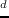
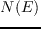
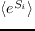

Next: Concluding Discussion Up: Results Previous: Optimal sequences with 20
The mean, exponentiated sequence entropies  are reported in table 4.7 for each test protein. The sequence entropies for the corresponding Pfam alignments (both seed and full) are also shown. The values are averaged over the designed positions in the protein chain, and can be interpreted as a mean number of amino acid classes sampled at each position. There are six classes (see Methods), one of which (Gly) is not available to the designed positions but is present in Pfam. The entropies are much smaller in the designed sets than in the Pfam sets.
| Top 10,000 | Top 10,000 | Pfam | Pfam | |
| Protein | structures | sequences | seed | full |
| 1ABO | 1.36 | 1.58 | 2.79 | 3.01 |
| 1CKA | 1.20 | 1.41 | 2.84 | 3.03 |
| 1R6J | 1.33 | 1.48 | 3.11 | 3.66 |
| 1G9O | 1.21 | 1.53 | 3.29 | 3.81 |
| 2BYG | 1.57 | 1.63 | 3.31 | 3.67 |
| 1BM2 | 1.08 | 1.26 | 2.90 | 3.50 |
| 1O4C | 1.36 | 1.68 | 2.94 | 3.47 |
| 1M61 | 1.31 | 1.41 | 2.91 | 3.51 |
| 1A81 | 1.13 | 1.29 | 2.91 | 3.51 |
Retaining the top 10,000 designed sequences, CPD samples 1.3 to 1.7 amino acid classes at each position on average, compared to 3-4 in the Pfam alignments, or 2-3 Pfam classes if we exclude the Gly class. Thus the CPD sets are much less diverse than Pfam, as observed earlier for these and other protein families [#!Schmidt09!#,#!Schmidt10!#]. However, we showed earlier that if we did CPD for around ten backbone conformations, corresponding to ten representatives of a particular domain class (SH3, SH2, PDZ), then collected the sampled sequences, the overall entropy was similar to Pfam [#!Schmidt09!#,#!Schmidt10!#].
The sequence entropy is shown in figure 4.7 for the 1CKA SH3 protein as a function of the energy threshold . Exact CFN results are compared to REMC. For this small protein, complete enumeration was feasible up to an energy threshold of = 2 kcal/mol above the GMEC. REMC samples energies up to about 14 kcal/mol above the GMEC. The REMC sampling is essentilly complete up to about 0.75 kcal/mol above the GMEC, at which point the REMC curve (gray) begins to depart from the exact, CFN curve (black).
|
|
However, the REMC diversity at each position agrees very well with the CFN result up to about 1.5 kcal/mol above the GMEC. At = 2 kcal/mol above the GMEC, the REMC entropy is still 93% of the exact value. Thus, REMC samples the full sequence diversity at each position in this range, even though it does not sample exhaustively all the combinations of mutations (let alone rotamers) at all positions. Thus, for any pair of positions, REMC may not sample all combinations of allowed amino acid classes (up to 25 combinations, since the allowed sidechain types are grouped into five classes; see Methods) but it effectively samples, at either position, the same types as the exact method.
As we consider higher energy threshold values,  3 kcal/mol, the number of states sampled by REMC increases exponentially and the entropy increases in a quasilinear way. Different replicas sample different energy ranges, as expected; for example, the  =0.592 and
=0.592 and  =0.888 kcal/mol replicas sample the 4-10 and 11-14 kcal/mol ranges, respectively.
=0.888 kcal/mol replicas sample the 4-10 and 11-14 kcal/mol ranges, respectively.
mignon 2017-11-30